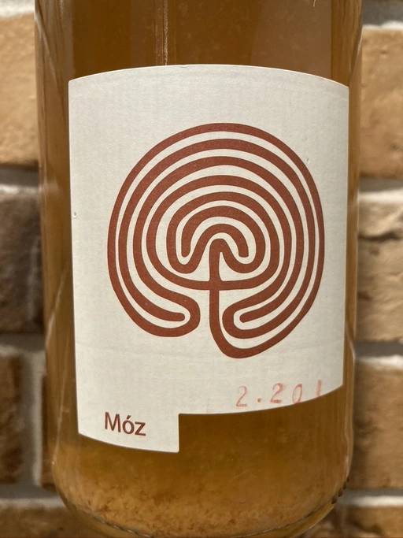
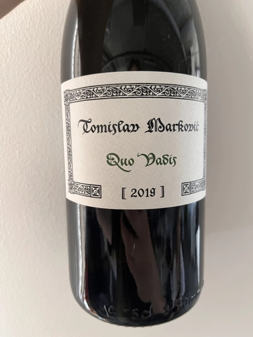
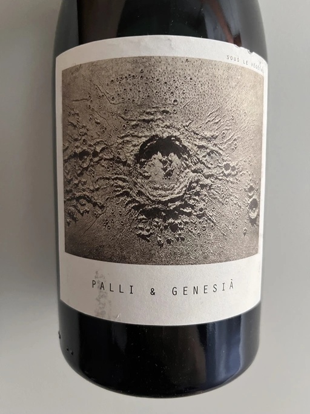
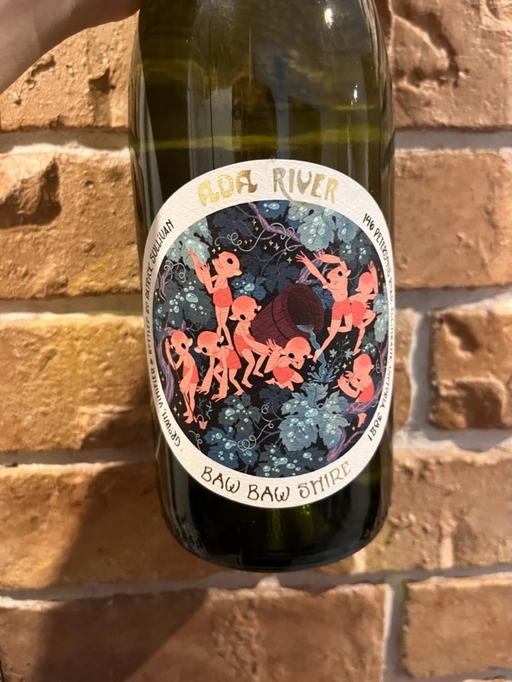
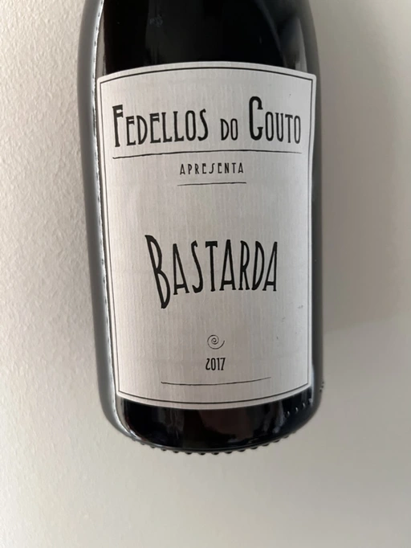
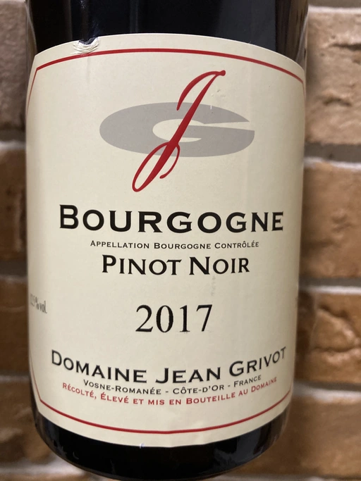
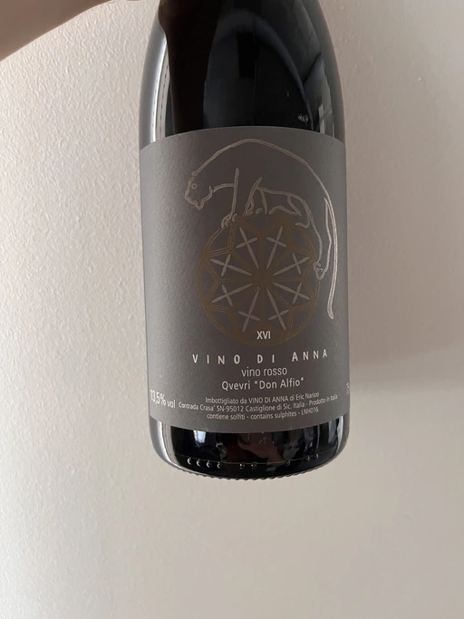

Mixed Bag Vol. 4
I am no street magician, yet somehow I manage to entertain people by hiding bottle after bottle in my backpack. Some people say it’s bottomless, just like Hermione’s bag, but I know its limits - only 14 bottles. That’s enough for two Mixed Bag wine tasting events per month. Envious people would call me lazy for not coming up with a better “topic”. And you know, I am not going to defend myself. Without further waste of letters on needless excuses, let me present the heroes of the evening.
- Costadila Móz NV
- Tomislav Marković Quo Vadis 2019
- Sous Le Végétal Palli et Genesia 2018
- Patrick Sullivan Baw Baw Shire Ada River Chardonnay 2018
- Fedellos do Couto Bastarda 2017
- Jean Grivot Bourgougne Pinot Noir 2017
- Vino di Anna Qvevri ‘Don Alfio’ 2016
Costadilà Mòz NV

- producer: Costadilà
- name: Mòz
- vintage: NV
- grapes: Moscato Giallo, Glera
- appellation: Vino (IT)
- location: San Lorenzo, Veneto, Italy
- alcohol: 10.5
- sugar: 2
- price: 670 UAH
Believe me or not, we have not tasted this wine as part of our events. Yes, many of you suffered the consequences of me discovering an orange Col Fondo, but it was behind the garages. And since we are running out of new sparkling wines, I decided to bring a new release of the “classical” Móz.
Everything is good here. A blend of Moscato Giallo and Glera from 30 years old vines raised in volcanic soils. Glera is pressed directly, and Moscato Giallo is fermented spontaneously with maceration for 30 days in steel. The result is combined and bottled with added dried grape must.
The last part is crucial for CO2 creation. You see, the grape must is the liquid obtained by the gentle crushing or pressing of (potentially dried) grapes. It contains water, organic acids, nitrogen compounds, minerals, polyphenols, vitamins, aromatic compounds, and, most importantly, sugar. The latter is food for the yeast, which produces ethanol and CO2 before dying (just inside our bottle). Since CO2 is trapped, we get our share of fun.
Oh, it must (pun intended) be boring. So let’s see what we’ve got next.
Tomislav Marković Quo Vadis 2019

- producer: Tomislav Marković
- name: Quo Vadis
- vintage: 2019
- grapes: Riesling
- appellation: Landwein Oberrhein
- location: Germany
- alcohol: 12.5
- sugar: N/A
- price: 930 UAH
We already had wine by Tomislav Marković at the previous Mixed Bag event. It was a bottle of Parabole 2018, a Grand Cru Pinot Noir, and it received the title of the most favourite wine of the evening.
Quo Vadis (whither goest thou) is 100% Riesling from 25 years old vines. Before 2019 the grapes were purchased from Rheinhessen. As you might already know, Tomislav acquired 0.5 ha of vineyards in Baden, and the 2019 vintage is the first release of Quo Vadis from this plot. A wandering wine with a fitting name! Spontaneously fermented in a 3rd fill 500L French tonneau, it went through full MLF. Only 880 bottles were produced. They say 2019 was a complicated year in the region, resulting in fresher and firmer wines.
Sous Le Végétal Palli et Genesia 2018

- producer: Sous Le Végétal
- name: Palli et Genesia
- vintage: 2018
- grapes: Muscat de Samos
- appellation: Oinos
- location: Samos, Greece
- alcohol: 13.5
- sugar: 2
- price: 1018 UAH
One might say that the earth exploded, leaving myriads of tiny islands between Greece and Turkey. Samos, a largely mountainous island, is almost touching Anatolia, only separated from it by 1 mile (sic!) Mycale Strait. In 2017 Jason Ligas and Patrick Bouju created a collaborative wine project Sous Le Végétal (under vegetation), on this beautiful green island. Through the variety of Muscat de Samos grapes, they try to express the spirit of the local terroir.
Jason Ligas is more known by his own Ktima Ligas from Pella in northern Greece. Just 61 days ago, we tasted Spira 2019, one of his creations, at another Mixed Bag event. It was a bonus bottle. I bet many of you remember this beauty.
Another star of Sous Le Végétal, Patrick Bouju, comes from Auvergne, France, where he owns Domaine la Bohéme. We have not tasted their wines as part of Barberry Garden, but some of you suffered this experience with me (either in the office or on the offsites).
What you usually notice while looking at Sous Le Végétal bottles is the off-the-Earth labels created by Anthony Duchene, a french artist inspired by the volcanic granite soils.
Grapes for Palli et Genesia come from Platanos village at 450 m above sea level. It’s a resurrected vineyard growing on pink granite. Fruits are pressed by own weight (hey gravity), aka “free-run juice”. Macerated on the skins for 40 days in stainless tanks and then aged in 750 litres clay amphoras.
Sounds crazy!
Patrick Sullivan Baw Baw Shire Ada River Chardonnay 2018

- producer: Patrick Sullivan
- name: Baw Baw Shire Ada River Chardonnay
- vintage: 2018
- grapes: Chardonnay
- region: Gippsland
- location: Victoria, Australia
- alcohol: 12.8
- sugar: N/A
- price: 1620 UAH
The previous year ended with a promise to explore more wine-making regions and grapes. I think we are doing pretty well, so I guess adding a Chardonnay and Pinot Noir today is not problematic. On the other hand, I fear that some of you might ask to ban me from buying Adelaide Hills or Gippsland wines. Don’t be such a meanie! At least I tried my best to find this particular vintage (a good year, unlike 2019). One angry Ivan Om, multiple happy people. That’s the bargain.
Since we already “enjoyed” a bottle of wine by Patrick Sullivan, I am not going to repeat his story. You can take a peek on a separate page.
Ada River wine is 100% Chardonnay sourced from a 40-years old vineyard in Manilla at 350m elevation, growing on volcanic soils. The vineyard has natural protection from the elements, creating a slightly more humid and stable environment. The wine spent 12 months in both old and new oak (30% new).
Fedellos do Couto Bastarda 2017

- producer: Fedellos do Couto
- name: Bastarda
- vintage: 2017
- grapes: Trousseau
- appellation: Vino de Mesa
- location: Ribera Sacra, Spain
- alcohol: 12.5
- sugar: 1
- price: 1024 UAH
Ah, these little brats! They keep appearing at our events under different labels. And I have a gut feeling that it’s not the last time. Yet, let’s put my jokes aside and be serious for a moment, at least. Fedellos do Couto (literally, brats from Couto, mind you) is an incredible project from Ribeira Sacra by the talented Curro Bareño, Jesús Olivares, and Luis Taboada trio.
Bastarda (Trousseau) is a difficult grape to reach full ripeness in the Jura, in its place of origin, so the plantings are fairly modest there. Yet it is more successful in the relatively warmer climate of Ribera Sacra. This is why there is a fair amount of Trousseau in this corner of the Iberian peninsula. It is also known as Merenzao in Valdeorras, or Bastardo just across the border, in Portugal.
Grapes for this wine come from 20-70 years old vines in granite, schist soils at 350-650m elevation. Grapes are hand-harvested, left in the whole cluster and fermented using natural yeasts in stainless steel tanks. 40-60 day maceration and then aged for 7 months in 300-500L oak barrels.
Jean Grivot Bourgougne Pinot Noir 2017

- producer: Jean Grivot
- name: Bourgougne Pinot Noir
- vintage: 2017
- grapes: Pinot Noir
- appellation: Bourgogne AOC
- location: Burgundy, France
- alcohol: 12.5
- sugar: 2
- price: 1282 UAH
A land of small vineyards owned by peasant farmers who eat in three-star restaurants, ride on luxury cars, do the dirty work on the vineyards and winery and sell the most expensive wines in the world. Burgundy is a complex and highly detailed region containing about a third of wine appellations in France. Land that qualifies for one of Burgundy’s better appellations is so valuable that it rarely passes out of the family. Often it becomes part of a complex inheritance system which requires all property to be shared equally among the children. As a result, the whole region is a carpet made of incredibly small scraps.
I confess. The previous paragraph was shamelessly stolen from the previous article. Now you can say there is nothing holy for me. But wait until you have a taste of Jean Grivot wine. Skilful Domaine with unique style.
Like many other wineries around, it’s a family-owned one. Its history is rooted somewhere around the French Revolution when the Grivot family moved from Jura to Vosne-Romanée. Yet the domain’s wines were not estate bottled until 1959, four years after Jean Grivot’s father’s death. They believe in generational change, so in 1987 Étienne Grivot and his wife Marielle (Patrick Bize’s sister) took over from Jean Grivot, and then in 2017, Mathilde took over her parents.
Today they own 15.5 ha of vineyards across Côte de Nuits (the northern part of Côte d’Or). The family owns 3 grand crus, 8 (9?) premier crus, and several non-crus. Yes, it sounds incredible (and pricey), yet today we have an entry-level Pinot Noir. But don’t be fooled. Yes, the only loud name on this label is the domain’s name. Yet, this is one of the best entry-level Burgundian Pinot Noirs you can find on our market, and it’s so good that it can give a head start to some premier crus from other domains. Skill is key, after all.
Vino di Anna Qvevri ‘Don Alfio’ 2016

- producer: Vino di Anna
- name: Qvevri ‘Don Alfio’
- vintage: 2016
- grapes: Nerello Mascalese, Alicante Henri Bouschet, Nerello Cappuccio
- appellation: IGP Terre Siciliane
- location: Sicily, Italy
- alcohol: 13.5
- sugar: 1
- price: 1190 UAH
The beforementioned Ivan Om used to call me a brand ambassador of Vino di Anna. Yes, he mocked me for drinking too much of their wine (and incidentally, pushing others to repeat my deeds). Unfortunately, I am not affiliated with them in no way (double negation, yet forf a reason unknown). Alright, alright. I am too chatty. My point is simple - before this event, we had no single wine by this winery as part of Barberry Garden. When I realised this fact, I decided to take my chance and prove myself as a loyal “friend” of the winery.
Sicily. Mount Etna. Crazy winemaking region with its charm, elegance, beauty, and, most importantly, character. A place to visit, to fall in love with, and stay for the rest of your life. A common story that found a new installation with Anna Martens and Eric Narioo.
Originally from Adelaide (hehe), Anna is an oenologist. She had different plans in life - to make Super Tuscan wines. Yet, in 2004, she met Eric Narioo, a Frenchman and wine lover. Eric was successfully involved in the importing business and was an early advocate of “natural” wines. He took her on a journey through the Savoie, Jura and Loire. Eventually, they married and found themselves in Sicily. It happens, right?
In any case, 2008 is the year when Anna and Eric crafted their first wine on Mount Etna. Only two years after, the couple purchased their first vineyard of old Nerello Mascelese in Contrada (historic lava flows) Crasà. Today they own 7 ha of land spread across the northern slopes of the volcano in different Contrade.
Don Alfio is the name of biodynamically farmed vineyard located at 900 metres above the village of Rovitello. It’s an isolated 0.6 ha plot of 90-100+ years old Nerello Mascalese. The grapes are hand-picked, de-stemmed and placed into a 1500 litre Georgian qvevri buried in the underground cellar. Yup, qvevri, handmade by one of the few remaining artisan qvevri makers, Zaaliko Bodjadze. In 2013, Vino di Anna received 8 qvevris.
After alcoholic fermentation conducted by indigenous yeast, the wine was sealed to macerate for four months on skins. It was then pressed, and the wine returned to a smaller qvevri for another winter. Only then, in May 2018, it was bottled without fining nor filtration.
Sicily is a land of a true diversity. And ‘Don Alfio’ is a great illustration of this spirit.
Scores
- Costadila Móz NV
- Tomislav Marković Quo Vadis 2019
- Sous Le Végétal Palli et Genesia 2018
- Patrick Sullivan Baw Baw Shire Ada River Chardonnay 2018
- Fedellos do Couto Bastarda 2017
- Jean Grivot Bourgougne Pinot Noir 2017
- Vino di Anna Qvevri ‘Don Alfio’ 2016
| Wine #1 | Wine #2 | Wine #3 | Wine #4 | Wine #5 | Wine #6 | Wine #7 | |
|---|---|---|---|---|---|---|---|
| Daria B | 3.50 | 3.60 | 3.50 | 4.00 | 3.60 | 3.70 | 3.80 |
| Artem O | 4.40 | 4.30 | 3.20 | 3.60 | 4.00 | 4.10 | 4.20 |
| Ivietta K | 3.30 | 4.50 | 3.90 | 4.40 | 4.00 | 4.10 | 4.20 |
| Dmytro D | 3.60 | 4.30 | 3.00 | 4.30 | 3.30 | 3.90 | 3.70 |
| Elivra K | 4.00 | 4.40 | 3.70 | 4.40 | 3.90 | 3.80 | 3.50 |
| Mariia S | 3.80 | 4.10 | 3.30 | 4.30 | 3.70 | 3.80 | 3.60 |
| Dimitry G | 4.00 | 4.50 | 2.10 | 4.50 | 3.20 | 3.50 | 3.00 |
| Kris S | 3.90 | 4.60 | 2.80 | 4.00 | 3.10 | 3.90 | 2.60 |
| Andrii K | 3.50 | 4.20 | 2.60 | 4.00 | 3.50 | 3.70 | 4.00 |
| Boris B | 3.80 | 4.00 | 4.20 | 4.20 | 4.00 | 4.00 | 4.20 |
| amean | sdev | favourite | outcast | price | QPR | |
|---|---|---|---|---|---|---|
| Wine #1 | 3.78 | 0.0916 | 0.00 | 2.00 | 670.00 | 2.5858 |
| Wine #2 | 4.25 | 0.0785 | 3.00 | 0.00 | 930.00 | 3.7862 |
| Wine #3 | 3.23 | 0.3601 | 1.00 | 6.00 | 1018.00 | 0.7926 |
| Wine #4 | 4.17 | 0.0661 | 5.00 | 0.00 | 1620.00 | 1.9198 |
| Wine #5 | 3.63 | 0.1081 | 0.00 | 0.00 | 1024.00 | 1.3635 |
| Wine #6 | 3.85 | 0.0325 | 0.00 | 0.00 | 1282.00 | 1.4973 |
| Wine #7 | 3.68 | 0.2596 | 1.00 | 2.00 | 1190.00 | 1.2601 |
How to read this table:
ameanis arithmetic mean (and not ‘amen’), calculated as sum of all scores divided by count of scores for particular wine. It is more useful thantotal, because on some events some wines are not tasted by all participants.sdevis standard deviation. The bigger this value the more controversial the wine is, meaning that people have different opinions on this one.favouriteis amount of people who marked this wine as favourite of the event.outcastis amount of people who marked this wine as outcast of the event.priceis wine price in UAH.QPRis quality price ratio, calculated in as100 * factorial(rms)/price. The reason behind this totally unprofessional formula is simple. At some point you have to pay more and more to get a little fraction of satisfaction. Factorial used in this formula rewards scores close to the upper bound 120 times more than scores close to the lower bound.
Afterword
This is the last event of this month and certainly the most ‘complicated’. I am happy that Quo Vadis and Ada River Chardonnay were received so well. It was interesting to discover the flor-based nature of Palli et Genesia, yet the reaction to this feature tells me to avoid bringing Vin Jaune in the nearest future. Overall the set of wines lacks balance and coverage. This is something to consider for the following events.
Despite the struggle with guessing, we still had three little prizes.
- Raisin: 100 Grands vins naturels d’émotion (UA edition)
- Wine Folly: The Essential Guide to Wine (UA edition)
- Legnoart Corkscrew “Roero”
Safe travels!
Resources
- Mòz | Costadilà
- Moreno, Juan, and Rafael Peinado. Chapter 2 - Composition of Grape Must. Enological Chemistry. 1st ed., Academic Press, 2012.
- Markovic Riesling Quo Vadis | K&M Gutsweine | Frankfurt | Wein (DE)
- Sous Le Vegetal | wanderbyparis
- Sous le Végétal – Zev Rovine Selections
- Sous le Vegetal Wines | Natural Wine Producers | RAW WINE
- Sous Le Vegetal - Palli et Genesia 2018 - Samos, Greece — Gergovie Wines
- Fedellos Do Couto | Bowler Wine
- Negociants International - Patrick Sullivan Ada River Chardonnay
- Domaine Jean Grivot | Winebow
- Vino di Anna producers of Natural Wines - Sicily